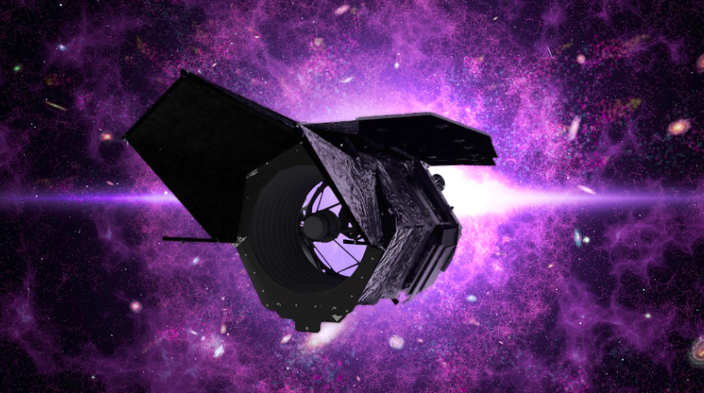
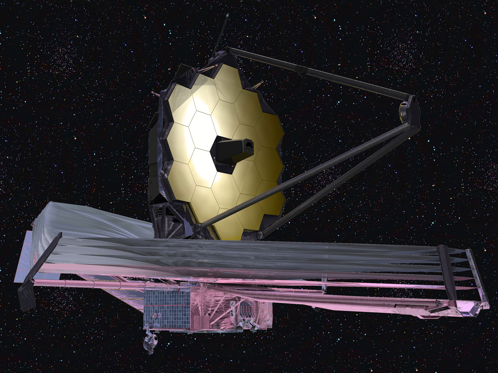

Dark Matter
Dark Matter, an invisible element, is something that has been a topic of discussion, and a topic that has been puzzling scientists for years. Due to it being invisible, the only way we can get to know its existence is through its gravitational attraction. It is said to compose 27% of the universe (including matter and energy), while the visible matter that we can see (like planets, stars, and us) is only 5%.
How did we make this discovery?
In 1933, a scientist, named Fritz Zwicky, was studying a cluster of galaxies, and realized that the gravitational pull, keeping all the galaxies together, was only 1% of what was required. And this is what raised the revolutionary question: why aren't the galaxies veering off? This led to the theorization of ‘Dark Matter’, but it wasn’t till the 1970s when this idea was taken seriously. In the 1970s, a similar phenomenon was calculated. It was calculated that the stars in a galaxy comprised only 10% of the mass that was needed for them to orbit the center of the galaxy. Also, another phenonemon of gravitational lensing (light bending due to the gravity exerted by massive celestial bodies) proved this concept. Light was bending around the celestial objects like quasars and stars a lot more than they should have been, indicating the presence of dark matter.
What is dark matter?
Till now, we don’t know much about what dark matter is. Most people believe that dark matter is made up of something we haven’t seen before, like Weakly Interacting Massive Particles (or WIMPs, which can have a mass of anything between 1 to 10,000 times the mass of a proton), or axions (or lighter particles whose existence hasn't been proven yet). However, we do know the following:
- It is not made up of clouds of particles called baryons (which make up normal matter). That is because if it were like that, then we would be able to notice their presence by passing radiation through them, and noticing how much of the radiation gets absorbed. We haven't been able to detect it, however. Some people (very few) believe that dark matter can be baryonic, but that can only be the case if it is made of small but dense and heavy baryons, which will lead it to have a high gravitational attraction and yet a small, harder-to-detect size.
- It is not like antimatter, which annihilates matter when it is in contact. When this annihilation happens, certain gamma rays are produced, and we haven’t detected this radiation.
To detect the presence of dark matter, first we need to understand where it is, and what its gravitational attraction is. In our galaxy (The Milky Way Galaxy), about 45% of the gravitational force is due to dark matter, while 55% is due to baryonic - normal - matter. The reason for the dark matter to have a lower force is because, according to Edward Belbruno (the person who calculated this force), most of the dark matter is present on the outskirts of the galaxy. The visible, circular shape of our galaxy is supposedly surrounded by something called a ‘halo’ of dark matter, which contains the greatest concentration of dark matter in our galaxy (in fact, there is extremely minimal normal matter present in this halo of dark matter). Therefore, we, in our solar system, don’t experience a strong force of gravity from dark matter. There have been incidents where we have noticed the gravity of dark matter affecting spacecraft, although that has happened only when the matter has moved through dark matter for a certain amount of time. However, the effect of the dark matter is so low that it is extremely difficult to even detect the change. For example, after a spacecraft named the Pioneer 10 traveled billions of miles, its trajectory only changed by about 5 feet (that is 9 inches shorter than the average American man’s height).
Now, you must be thinking that there has to be some place where the galactic force takes over, and that happens about 30,000 astronomical units from the Sun. That distance is equal to the distance you cover when you travel along the circumference of the Sun about 1,024,877 times. To detect dark matter, we can use a spacecraft with radioisotope power, which also carries an object that, when dropped far away from the gravitational field of the solar system, will feel only galactic forces. The spacecraft itself will feel thermal energy (due to the radioactive decay) and the galactic forces. “Subtracting out the thermal force, researchers could then look at how the galactic force relates to deviations in the respective trajectories of the ball and the spacecraft.” (NASA)
Missions to detect dark matter 
Roman Space Telescope: The Roman Space Telescope (or the Nancy Grace Roman Space Telescope), with a panoramic view 100 times that of the Hubble Space Telescope, will attempt at clearing doubts of dark matter and dark energy, observing how they have distributed themselves across the universe throughout the history of the cosmos. Along with dark matter and dark energy, it is also aimed at finding exoplanets, but that is not relevant to this article. Set to launch within this decade, it will be an observatory with a similar size to the Hubble telescope, but with a better and wider view. 
James Webb Telescope (pls check my article on this for more detail): This telescope, launched on 25 December 2021 and whose construction began back in 2004, is aimed to cover greater wavelengths of infrared beams with greater sensitivity, extending what Hubble had already achieved to even greater heights. This telescope will also be used for dark matter by taking pictures of galaxies and observing their gravitational lensing (how the gravity of dark matter and celestial bodies is bending space itself, henceforth bending the light coming from behind as well).
Euclid: Euclid is a spacecraft designed by the European Space Agency (ESA), aimed to situate itself at Lagrange Point 2 (L2), a place where the gravitational forces are stable, will also aim to search for dark matter (and dark energy), by, firstly, measuring the redshifts and spectra over the span of 10 billion years, and secondly, by making a map of the universe through weak gravitational lensing.
Image Credits: NASA
References
- Riess, Adam. "dark matter". Encyclopedia Britannica, 3 Feb. 2022, https://www.britannica.com/science/dark-matter.
- Mahajan, Shobhit. “James Webb telescope: Light on dark matter.” IndianExpress, 29 August 2022, https://indianexpress.com/article/opinion/columns/james-webb-telescope-light-on-dark-matter-8117557/.
- “Complex Dark Matter.” Youtube, uploaded by Fermilab, 17 April 2015, https://www.youtube.com/watch?v=BmXx92HvZVg.
- Pacha, Aswathi. “Explained: What is dark energy, and have scientists finally detected it?” Indian Express, 28 September 2021, https://indianexpress.com/article/explained/what-is-dark-energy-have-scientists-detected-it-finally-7534930/lite/.
- Ryden, Barbara. “The Accelerating Universe.” Astronomy 162, 9 March 2003, https://www.astronomy.ohio-state.edu/ryden.1/ast162_10/notes41.html.
- Potter, Sean. “NASA Telescope Named For ‘Mother of Hubble’ Nancy Grace Roman.” NASA, 20 May 2020, https://www.nasa.gov/press-release/nasa-telescope-named-for-mother-of-hubble-nancy-grace-roman.